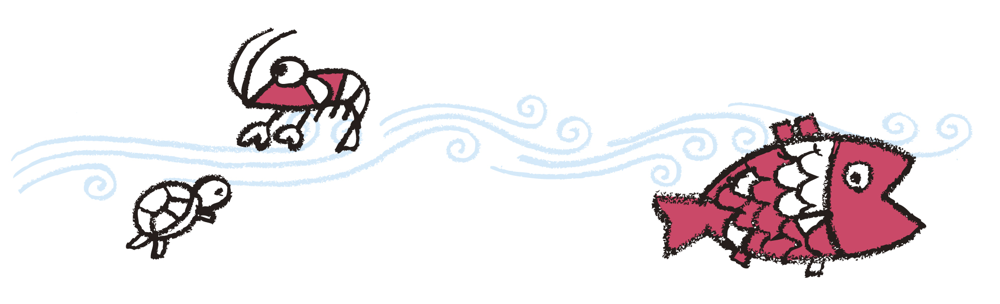

礼拝
主日礼拝
毎週日曜日午前10:30～11:30
信仰生活の中心は週の最初である日曜日にささげられる礼拝です。
日常の忙しさから開放され、聖書のメッセージに耳を傾け、讃美と祈りを共にするひとときです。どなたでも自由に参加することができます。
信仰生活の中心は週の最初である日曜日にささげられる礼拝です。
日常の忙しさから開放され、聖書のメッセージに耳を傾け、讃美と祈りを共にするひとときです。どなたでも自由に参加することができます。
赤ちゃんから高校生くらいの年代のお兄さんお姉さんまで、お母さんもお父さんも、リーダーも、大人の人も一緒になって礼拝をし、神さまからのメッセージをお聞きした後で楽しい「分級」のひとときをもちます。誰でも、いつからでも、参加することができます。
聖書のみ言葉に触れ、与えられるメッセージを共に分かち合う時です。その後、共に祈り合う時をもちます。
ZOOMなどのツールを利用してリモートで行っています。
幼稚園の保護者が中心となって、共に聖書を学びあう時です。
子育てやこどもの成長のことなども語り合っています。
主日礼拝後、発題を通して、聖書を学びます。
キリスト教とは何か、聖書とはどういう書物なのかなど、キリスト教の基礎を牧師を通して学びます。
